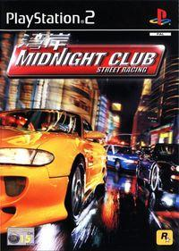
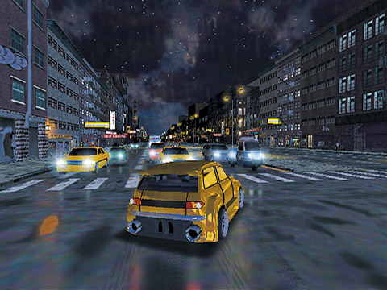
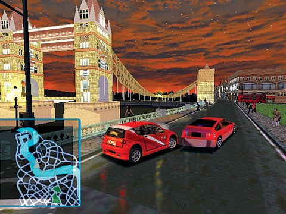
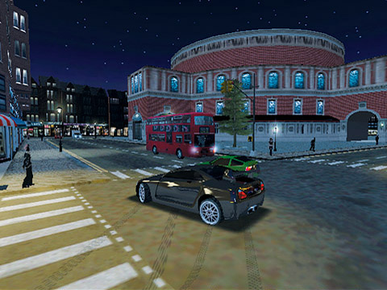
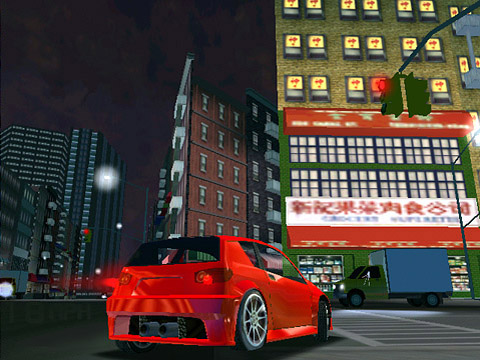

Midnight Club Street Racing

Descripción
Es un juego de carreras callejeras que destaca por ofrecer un mundo abierto en el que podemos explorar libremente las ciudades y competir contra otros corredores.
El juego nos lleva a Nueva York y Londres, donde tendremos que abrirnos camino dentro de un misterioso grupo de corredores llamado Midnight Club. Para conseguirlo, tendremos que ganar carreras, derrotar a nuestros rivales y conseguir sus vehículos.
Una de sus características más interesantes es la libertad que ofrece durante las carreras, ya que podemos elegir nuestros propios caminos por la ciudad en lugar de seguir circuitos cerrados. Además, tendremos que esquivar el tráfico, saltarnos semáforos y evitar a la policía mientras intentamos llegar los primeros a la meta.
Capturas del videojuego




Información del videojuego
| Desarrollador | Plataforma | Fecha de lanzamiento |
|---|---|---|
| Angel Studios | PS2 | 25 de octubre de 2000 |